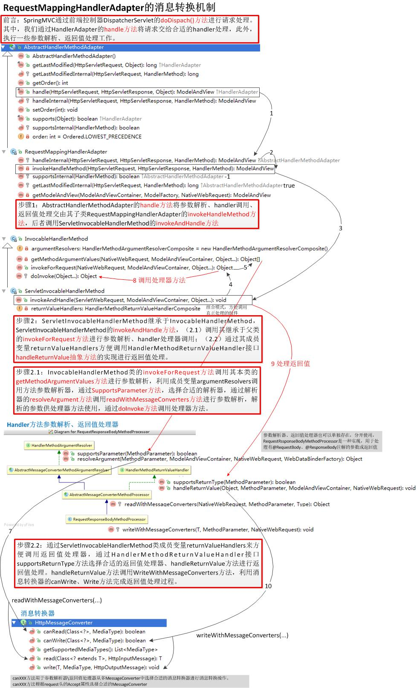

前言：Spring MVC 通过前端控制器 DispatcherServlet#doDispach() 方法进行请求处理。其中，我们通过 HandlerAdapter 的 handle 方法将请求交给合适的 handler 处理，此外，执行一些参数解析、返回值处理工作。
步骤1：AbstractHandlerMethodAdapter#handle() 方法将参数解析、handler 调用、返回值处理交由其子类 RequestMappingHandlerAdapter#invokeHandleMethod() 方法，后者调用 ServletInvocableHandlerMethod#invokeAndHandle()方法。
步骤2：ServletInvocableHandlerMethod 继承于 InvocableHandlerMethod，ServletInvocableHandlerMethod#invokeAndHandle() 方法。
（2.1）调用其继承于父类的 invokeForRequest 方法进行参数解析、handler 处理器调用；
（2.2）通过其成员变量 returnValueHandlers 方便调用 HandlerMethodReturnValueHandler 接口 handleReturnValue 抽象方法的实现进行返回值处理。
步骤2.1：InvocableHandlerMethod#invokeForRequest() 方法调用其本类的 getMethodArgumentValues 方法进行参数解析，利用成员变量 argumentResolvers 调用方法参数解析器，通过 SupportsParameter 方法，选择合适的解析器，通过解析器的 resolveArgument 方法调用 readWithMessageConverters 方法进行参数解析，解析的参数供处理器方法使用，通过 doInvoke 方法调用处理器方法。
步骤2.2：通过 ServletInvocableHandlerMethod 类成员变量 returnValueHandlers 来方便调用返回值处理器，通过 HandlerMethodReturnValueHandler#supportsReturnType() 方法选择合适的返回值处理器、handleReturnValue 方法进行返回值处理。handleReturnValue 方法调用 WriteWithMessageConverters 方法，利用消息转换器的 canWrite、Write 方法完成返回值处理过程。
AbstractHandlerMethodAdapter 和 RequestMappingHandlerAdapter
其中 AbstractHandlerMethodAdapter 是抽象类，AbstractHandlerMethodAdapter 只是简单实现了 HandlerAdapter 中定义的接口（其实最终还是在 RequesrMappingHandlerAdapter 中对代码进行实现的）。并且 AbstractHandlerMethodAdapter 中增加了执行顺序Oder，AbstractHandlerMethod 的源码如下：
1 2 3 4 5 6 7 8 9 10 11 12 13 14 15 16 17 18 19 20 21 22 23 24 25 26 27 28 29 30 31 32 33 34 35 36 37 38 39 40 41 | public abstract class AbstractHandlerMethodAdapter extends WebContentGenerator implements HandlerAdapter, Ordered { private int order = Ordered.LOWEST_PRECEDENCE; public AbstractHandlerMethodAdapter() { // no restriction of HTTP methods by default super(false); } public void setOrder(int order) { this.order = order; } @Override public int getOrder() { return this.order; } @Override public final boolean supports(Object handler) { return (handler instanceof HandlerMethod && supportsInternal((HandlerMethod) handler)); } protected abstract boolean supportsInternal(HandlerMethod handlerMethod); @Override public final ModelAndView handle(HttpServletRequest request, HttpServletResponse response, Object handler) throws Exception { return handleInternal(request, response, (HandlerMethod) handler); } // handleInternal 主要做如下操作: // (1)备好处理器所需要的参数 // (2)使用处理器处理请求 // (3)处理返回值，也就是将不同类型的返回值统一处理成 ModelAndView 类型 protected abstract ModelAndView handleInternal(HttpServletRequest request, HttpServletResponse response, HandlerMethod handlerMethod) throws Exception; @Override public final long getLastModified(HttpServletRequest request, Object handler) { return getLastModifiedInternal(request, (HandlerMethod) handler); } protected abstract long getLastModifiedInternal(HttpServletRequest request, HandlerMethod handlerMethod);} |
从上面代码中我们可以看到 handleInternal 和 getLastModifiedInternal 是抽象方法，具体实现是在子类 RequestMappingHandlerAdapter 中。
RequestMappingHandlerAdapter#getLastModifiedInternal() 的实现如下，直接返回值 -1
1 2 3 4 | @Overrideprotected long getLastModifiedInternal(HttpServletRequest request, HandlerMethod handlerMethod) { return -1;} |
handleInternal 的实现如下，因为中间涉及到很多参数等等操作的处理，这里我们就不做过多介绍了。
1 2 3 4 5 6 7 | @Overrideprotected ModelAndView handleInternal(HttpServletRequest request, HttpServletResponse response, HandlerMethod handlerMethod) throws Exception { ............ //handlerMethod既是我们要执行的Controller中的具体的方法 return invokeHandlerMethod(request, response, handlerMethod);} |
最终操作是在 invokeHandlerMothod 中，执行结果返回 ModelAndView 值。
1 2 3 4 5 6 7 8 9 10 11 12 13 | protected ModelAndView invokeHandlerMethod(HttpServletRequest request, HttpServletResponse response, HandlerMethod handlerMethod) throws Exception { ......... // 执行 Controller 中的 RequestMapping 注释的方法 invocableMethod.invokeAndHandle(webRequest, mavContainer); if (asyncManager.isConcurrentHandlingStarted()) { return null; } // 返回 ModelAndView 视图 return getModelAndView(mavContainer, modelFactory, webRequest);} |
其实简单来说就是采用反射机制调用 url 请求对应的 Controller 中的方法（这其中还包括参数处理等等操作没有介绍），返回执行结果值，这样就完成了 HandlerAdapter 的使命。
参考链接：